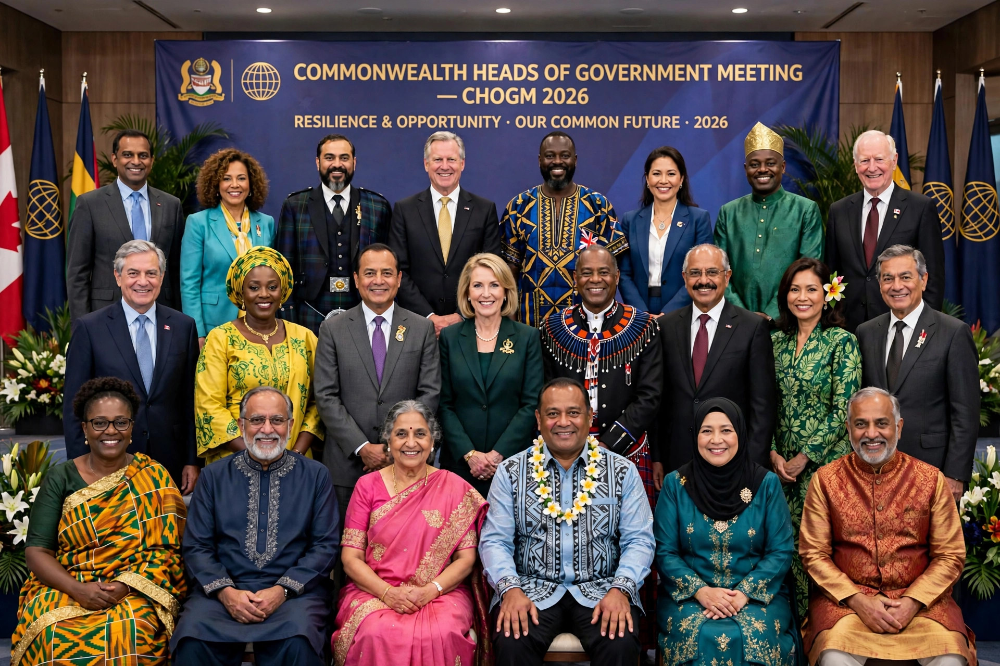

The Commonwealth Heads of Government Meeting (often abbreviated to CHOGM) is a biennial summit meeting of the governmental leaders from all Commonwealth nations. Held since 1971, it is the association's highest consultative and policy-making body and builds on a tradition of prime ministers' conferences stretching back through the Imperial Conferences of the early 20th century. The modern Commonwealth itself rests on the London Declaration of 1949.
CHOGMs are hosted by a different member country each time and are usually chaired by that country's head of government, who becomes the Commonwealth's Chair-in-Office until the next meeting. Alongside formal sessions, leaders traditionally hold informal "retreat" discussions without officials present — a format pioneered at the first CHOGM, in Singapore in 1971. Each meeting ends with a communiqué; parallel forums for business, youth and civil society have been added since the 1990s, and the meeting is usually attended by the Head of the Commonwealth.
The Singapore meeting of 1971 issued the Singapore Declaration of Commonwealth Principles. The 1977 Gleneagles Agreement committed members to discourage sporting contact with apartheid South Africa. The Harare Declaration of 1991 restated the Commonwealth's commitment to democracy and human rights, and established the framework under which members have since been suspended for unconstitutional seizures of power — Nigeria (1995), Pakistan (1999 and 2007) and Fiji (repeatedly) among them; Zimbabwe withdrew in 2003 after its suspension. The 2011 Perth meeting adopted a process leading to the Commonwealth Charter of 2012. Recent meetings were held in Kigali, Rwanda, in 2022 (postponed from 2020 by the COVID-19 pandemic) and in Apia, Samoa, in 2024 — the first in a Pacific island state.
Between summits the Commonwealth is administered by the Commonwealth Secretariat, established in 1965 and based at Marlborough House in London, headed by a Secretary-General elected by the heads of government.